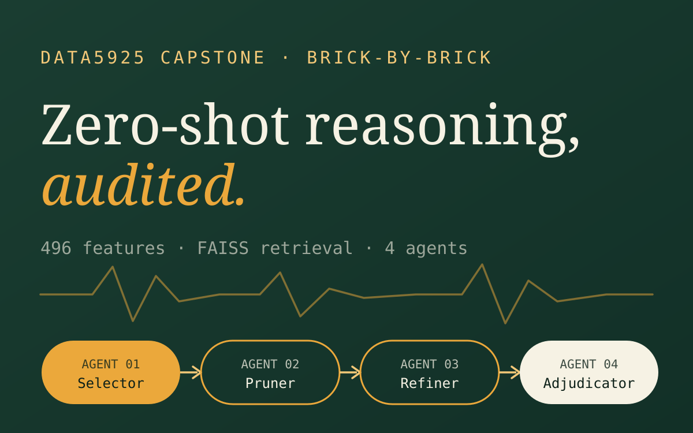
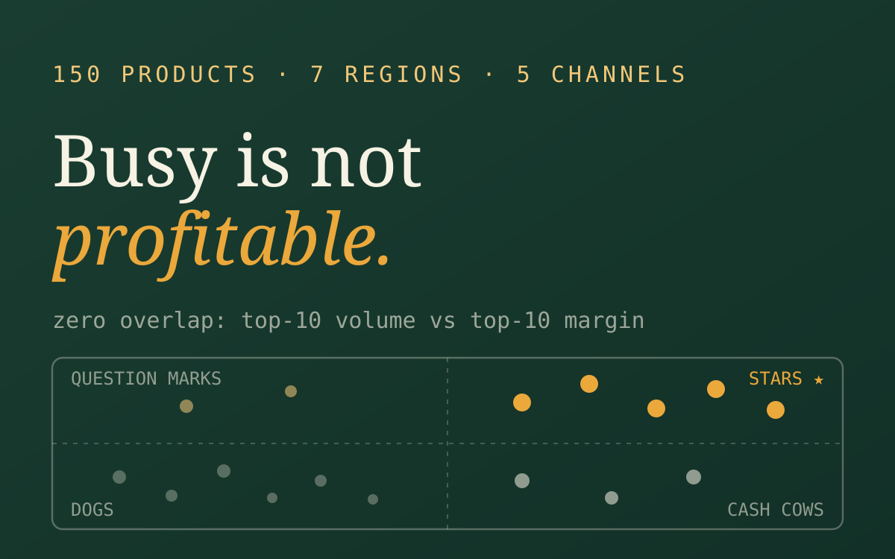
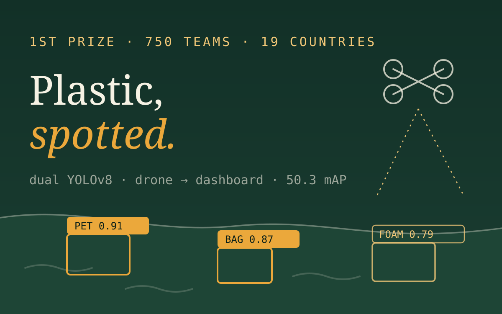
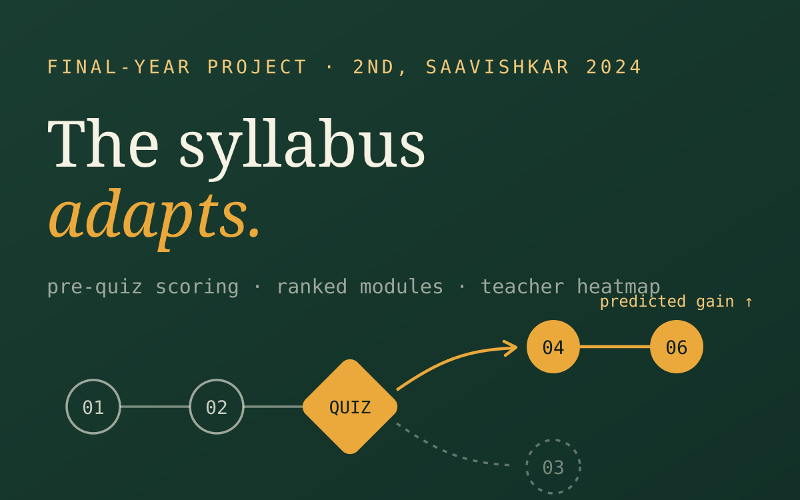
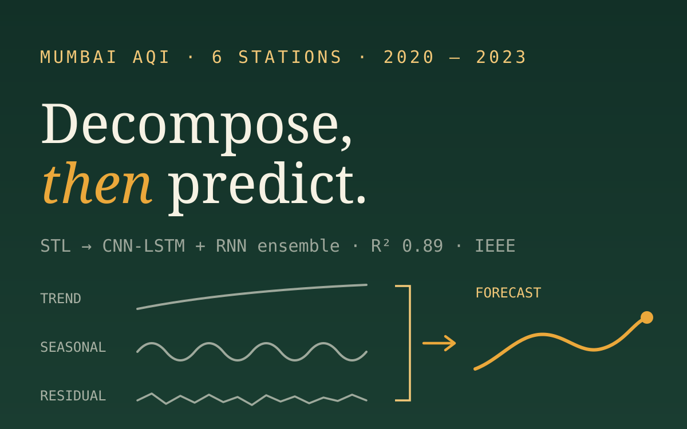
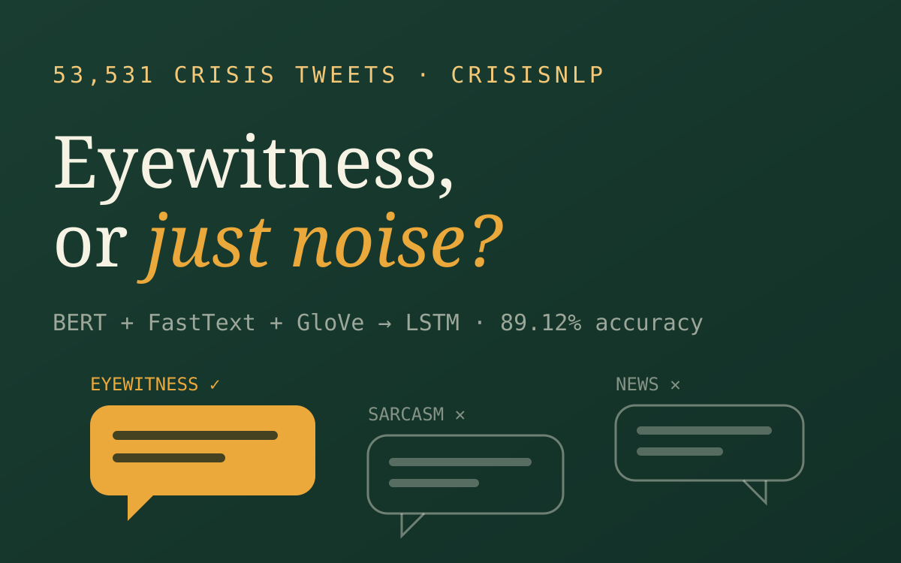
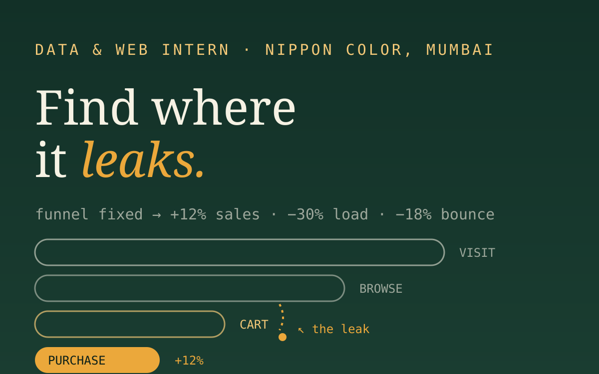
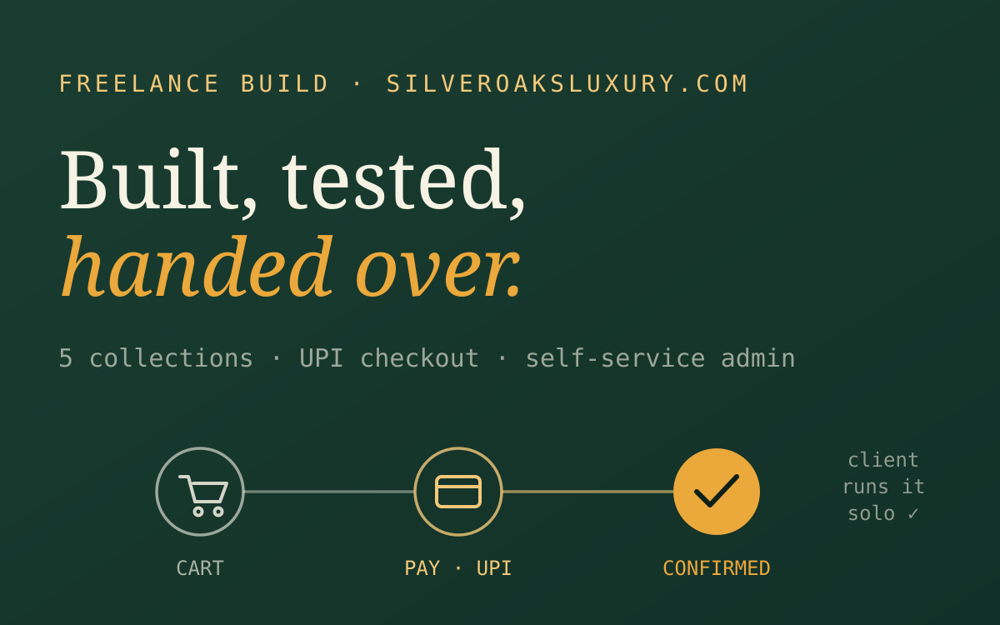

Ten studies in deciding with data.

LLM Agent Pipeline for Time-Series Classification
Can a training-free agent chain label building telemetry? A capstone that answers with controlled ablations, not vibes.

Beer Portfolio Optimisation
An $80k profit lever hiding inside a discount budget - found by refusing to trust the obvious chart.

Clear Waters: Plastic Detection in Rivers
A drone-to-dashboard platform that detects, maps and forecasts river plastic. First of 750 teams.

Coral Bleaching Severity Prediction
Four decades of global reef data, five model families - and proof that reef structure beats temperature.

ATLAS: Retail Basket & Trend Dashboard
Linking basket-level behaviour to macro retail trends - designed for two very different users, live on Streamlit.

Adaptive Learning & Curriculum Recommender
An EdTech platform that re-plans the curriculum after every quiz - plus a per-class teacher heatmap.

Air Quality Forecasting - Hybrid Ensemble
Decompose first, predict second: a hybrid STL ensemble that beat VAR and CEEMDAN across six stations.

Disaster Tweet Classification
Separating eyewitness signal from sarcasm in 53,531 crisis tweets with a hybrid embedding ensemble.

Nippon Color - Site Redesign & BI Dashboards
A site rebuild and BI layer that cut page-load time 30% and helped lift online sales 12%.

Silver Oaks - E-commerce Website
A full store plus admin panel a client now runs without me. Live, tested, and signed off.